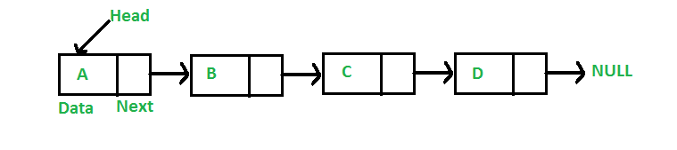

David Lu
4/22/17
In computer science, a data structure is a particular way of organizing data in a computer so that it can be used efficiently.
This week, we will look at the linear linked list data structure
In computer science, a list or sequence is an abstract data type that represents a countable number of ordered values, where the same value may occur more than once.
An instance of a list is a computer representation of the mathematical concept of a finite sequence.
A list can also be defined inductively:
A list is either empty or it is an item followed by a list.
In computer science, a linked list is a linear collection of data elements, called nodes, each pointing to the next node by means of a pointer.
It is a data structure consisting of a group of nodes which together represent a sequence.
In a simple linear linked list, each node is composed of a piece of data and a reference (in other words, a link) to the next node in the sequence.

Linked Lists are among the simplest and most common data structures because it allows for efficient insertion or removal of elements from any position in the sequence.
It is important to understand that a linked list is different than an array. Linked lists are not indexed and does not support arbitrary access.
Do you recall what an array is and how arrays work?
Average for Linear Linked List:
| Access | Search | Insert | Delete |
|---|---|---|---|
Abstract Data Type (ADT)
A constructor for creating an empty list
A test to see if a list is empty
A way to insert an item in front of the list
A way to insert an item at the back of the list
Search for a particular item
What else?
To implement a linear linked list in C++, we need to understand a few C++ concepts.
We can use a struct or a class to define each node inductively.
;
Let’s keep things simple and consider linear linked lists of integers.
A basic operation for lists is to put something on the list. If our list is written on paper, we just find a place to write our item down. If our list is in markdown, we can do this:
First item
Second item
What is the algorithm for insertion in a linear linked list?
if head is empty:head <- dataelse:
What will this do?
Should we insert at the front, back, or middle of the list?
What are the algorithms to do these?
Another basic operation is to remove something from the list. Remember in C++ we need to free the memory that we allocated.
You should have seen how to traverse the linear linked list by looping. Perhaps you’ve seen code that looks like this:
node* temp = head;while(temp != NULL)
Since a list is a recursive data type, it makes sense to make use of recursion in programming operations on lists.
Recursion is a tool a programmer can use to invoke a function call on itself.
Recursive programming is directly related to mathematical induction.
In recursive programming we need two things:
A base case
A recursive case
Consider the pseudocode to add an item at the end of a linear linked list.
Iteratively
if head = None:head <- newelse:node temp <- headwhile temp.next != None:temp <- temp.nexttemp.next <- new
Recursively
if head = None:head <- newelse
Let’s try in C++ together.
An operation we may be interested in doing on lists is to find whether an item is in a list or not. This is called search.
Another operation we may be interested in performing on lists is to sort it. We called this sort.
If you want to learn how to program, you must practice. Programming is a skill, not something that can just be memorized. Like any skill, you must practice to get good.
There are many websites that have environments set up so that you can practice programming.
Here are two examples that you can try:
Codefights
HackerRank
Alternatively, you can program from scratch and practice.
There are some useful functions in the C++ standard library to generate random numbers.
We will need to include two libraries: ctime and cstdlib.
We need the ctime library to “seed” the peudo random number generator. The cstdlib library contains a pseudo random number generator function.
...// To seed the PRNG:; // Do this only once!// To get a random number from 0 to 100:int num = % 101;
So we may have a loop to insert some number of random numbers into our list to practice with.
For example:
for(int i = 0; i < 10; ++i)
Given a linear linked list print in reverse order.
Example: = 3->2->4->5
Output of print(): 5->4->2->3
Given two linear linked lists and , return true if they are the same list. (Order and values matter)
Given a linear linked list return with its items in reverse order
Given a linear linked list , return a sorted list such taht contains the same values as
Example: Given 4->9->2->3->2, return 2->2->3->4->9
Given a sorted linear linked list, delete duplicates from the list.
For example, if given 1->2->2->3->3->3->4, the resulting list should be 1->2->3->4.
Given sorted linear linked lists and , return a sorted linear linked list that contains all elements from and
Example: = 2->3->4->6, = 1->3->7
= 1->2->3->3->4->6->7